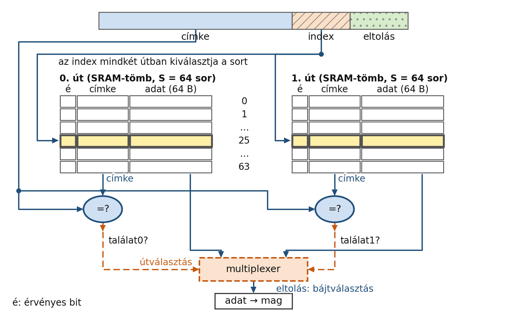

A labor gépén a P-mag L1 adat-cache-e 48 KiB, azaz 768 darab 64 bájtos sor. Minden egyes betöltésnél el kell dönteni, hogy a kért cím sora benne van-e a 768 között, és ha igen, melyik. Erre nagyjából öt órajelciklus van (a mért 1,1 ns a Lokalitás és a memóriahierarchia lépcsőjéből), tehát a sorok egyenkénti végignézése szóba sem jöhet, és az is drága, ha mind a 768 címkét egyszerre hasonlítjuk össze.
A hardver ezért megszorítja, hová kerülhet egy sor. Ennek következménye meglepő lehet: egy 48 KiB-os cache-ben 13 darab, egymástól 4096 bájtra lévő sor, összesen alig 832 bájtnyi adat, körbejárva minden egyes eléréskor hibázhat. Nem a méret kevés, hanem a hely. Ebben az alfejezetben megtanulja, hogyan bomlik fel egy cím a keresés lépéseire, mit tárol a cache a sor mellett, és hogyan jósolható meg papíron, hogy egy hozzáférési sorozat talál-e.
Képzeljen el egy iratszekrényt. Egy teljesen asszociatív szekrénybe bármelyik dossziét bármelyik rekeszbe lehet tenni, de kereséskor minden rekeszt meg kell nézni. A direkt leképezésű (direct-mapped) szekrényben minden dossziénak egyetlen kijelölt rekesze van, például az ügyszám utolsó két számjegye szerint: a keresés egyetlen pillantás, viszont két, ugyanarra a rekeszre kijelölt dosszié kiszorítja egymást, akkor is, ha a szekrény többi része üres. A köztes megoldás a halmazasszociatív (set-associative) szekrény: a szám kijelöl egy fiókot, a fiókban rekesz van, és azon belül szabad a választás.
A fiók száma a cím egy része, az index. A fiókon belül azt, hogy melyik dosszié melyik, egy címke dönti el: a cím maradék, felső része. A soron belüli bájtot pedig a cím alsó bitjei, az eltolás (offset) választja ki.

Kövesse az ábrán a narancs vezérlőjeleket: a két összehasonlító eredménye nem csak azt mondja meg, hogy találat-e, hanem azt is, melyik út adatát kell a multiplexernek továbbadnia.
Definíció. Egy cache kapacitása bájt (csak az adat), sormérete bájt, asszociativitása (az utak száma, vagyis hány helyre kerülhet egy adott sor). A halmazok (set) száma
Szavakban: a sorhelyet -s csoportokra osztjuk, egy csoport egy halmaz. A és az kettőhatvány, hogy a címmezők egyszerű bitkivágással előállhassanak; az nem feltétlenül az (a labor gépén 12).
Definíció. Az bites cím három mezőre bomlik: az alsó bit az eltolás, a fölötte lévő bit az index, a maradék bit a címke (tag).
Ugyanez egész számokkal: a sorszám
,
az index
,
a címke
,
az eltolás
.
A Számábrázolás gépközelből bitmezős
műveleteivel: index
(addr >> b) & (S - 1).
Miért a középső bitekből jön az index, és nem a legfelsőkből? Az egymás utáni sorok a középső bitekben különböznek, ezért egy folytonos tömb sorai sorban a 0., 1., 2., … halmazba esnek, és egy bájtos tömb pontosan elfér. Ha az index a legfelső bitekből jönne, egy teljes tömb ugyanabba a halmazba kerülne.
A gyakorlatban a cím 48 vagy több bites, és az L1-et jellemzően virtuális címmel indexelik, fizikai címkével; ennek feltétele, hogy elférjen a lapon belüli eltolásban (TLB, nagy lapok és a VIPT cache). A labor gépén , azaz éppen 4 KiB.
| Szervezés | Összehasonlítók | Előny | Hátrány | ||
|---|---|---|---|---|---|
| direkt leképezésű | 1 | 1 | a leggyorsabb, legkevesebb energia | sok ütközés | |
| -utas halmazasszociatív | 2–16 (tipikus) | kompromisszum | cserepolitika kell | ||
| teljesen asszociatív | 1 | nincs ütközés | csak kis méretben építhető |
A táblázat két széle ugyanannak a képletnek a határesete: esetén minden halmaz egyetlen hely, esetén egyetlen halmaz van, az index mező hossza nulla. A teljesen asszociatív szervezés a nagyon kis táraknál (például a címfordítás pufferénél) szokásos.
Definíció. Két sor ütközik, ha ugyanabba a halmazba kerül. Két cím pontosan akkor esik azonos halmazba (és azonos eltolásra), ha a különbségük egész többszöröse.
Ebből következik a kellemetlen eset: ha a program ciklikusan olyan sort használ, amelyek többszöröseire vannak egymástól, azok egy halmazon osztoznak, miközben a cache többi része üresen maradhat. A távolság neve a könyvben ütközési távolság.
Egy sorhelyhez az adaton kívül a következők tartoznak:
A teljes metaadat bitben, write-back cache-nél:
ahol a halmazonkénti cserebitek száma (valódi LRU-nál , fa-PLRU-nál ). Ez az adat méretéhez képest néhány százalék, de a kis sorméretet drágává teszi: fele akkora kétszer annyi címkét jelent.
A címke- és az adattömb SRAM (Tárolóelemek: latch, flip-flop, regiszter, SRAM): egy dekóder az index alapján kiválaszt egy szóvonalat, a bitvonalakon megjelenik az út tartalma. Az összehasonlító egyidejűleg veti össze a címkéket, és a találat jele vezérli a multiplexert. Az asszociativitás növelése tehát több tárat olvas ki egyszerre (energia), több összehasonlítót és szélesebb multiplexert kíván (terület és késleltetés). Ezért az L1 jellemzően mérsékelten asszociatív, és az utat a címkével párhuzamosan olvassa a gyorsaságért; a nagyobb L2 és L3 megengedheti, hogy előbb a címkét nézze meg, és csak a megfelelő utat olvassa ki (soros elérés; a konkrét megvalósítás termékfüggő, ellenőrizendő).
Továbbvitt eredmény. A címbontás:
,
,
,
;
index
.
Ennek és a paraméterezett archkit.cache.Cache modellnek az
alapjára épül a Csere- és írási stratégiák, az
AMAT, a hibák osztályozása és a többszintű
cache, a Cache-szimulátor és cache-tudatos
programozás, a TLB, nagy lapok és a VIPT
cache és a Cache-mellékcsatornák.
Továbbvitt eredmény. Az asszociativitás és az ütközés: egy halmaz csak sort tart, és a többszöröseire lévő címek ugyanabba a halmazba esnek; ciklikusan -nál több ilyen sor ütközési hibákat okoz akkor is, ha a cache nagy. Ezt az AMAT, a hibák osztályozása és a többszintű cache ütközési hibaként nevezi meg, a Cache-mellékcsatornák pedig támadási technikaként használja ki.
Egy játékcache:
B,
B, a címek kicsik. Hasonlítsuk össze a direkt leképezést
(,
,
,
)
és a kétutas szervezést
(,
,
)
a következő sorozaton:
0x00, 0x04, 0x10, 0x40, 0x00, 0x50, 0x10. A kétutas
változat LRU-t használ: a halmazból a régebben használt sort dobja
ki.
Először mindegyik címhez a sorszám () és az index:
| Cím | Sorszám | Direkt: halmaz | Direkt: eredmény | Kétutas: halmaz | Kétutas: eredmény |
|---|---|---|---|---|---|
0x00 |
0 | 0 | hiba | 0 | hiba |
0x04 |
0 | 0 | találat | 0 | találat |
0x10 |
1 | 1 | hiba | 1 | hiba |
0x40 |
4 | 0 | hiba, kiszorítja a 0. sort | 0 | hiba, a 0 és a 4 együtt bent |
0x00 |
0 | 0 | hiba, kiszorítja a 4. sort | 0 | találat |
0x50 |
5 | 1 | hiba, kiszorítja az 1. sort | 1 | hiba, az 1 és az 5 bent |
0x10 |
1 | 1 | hiba, kiszorítja az 5. sort | 1 | találat |
A direkt leképezés eredménye 1 találat, a kétutasé 3. A különbséget két pár okozza: a 0. és a 4. sor, illetve az 1. és az 5. sor. Mindkét pár bájtra van egymástól, tehát direkt leképezésnél egy helyen osztoznak; a kétutas cache-ben a pár két tagja egyszerre bent lehet.
Figyelje meg a 4. panelt: a kétutas cache 0. halmazában a
0x00 és a 0x40 sor egymás mellett van, ezért
az 5. lépés találat; ugyanaz a két sor direkt leképezésnél felváltva
szorítja ki egymást.
Az archkit.cache.Geometry a címbontás szabályait
tartalmazza. Nézzük meg a labor gépének három cache-szintjét:
import sys; sys.path.insert(0, "code")
from archkit import cache as C
addr = 0x12345678
print("szint S b s t címke index eltolás")
for name, size, ways in (("L1d", 48 * 1024, 12), ("L2", 1280 * 1024, 10),
("L3", 20480 * 1024, 10)):
g = C.Geometry(size, 64, ways, addr_bits=48)
tag, index, off = g.split(addr)
print(f"{name:6}{g.sets:6} {g.offset_bits:4}{g.index_bits:4}{g.tag_bits:4}"
f" 0x{tag:05X} {index:6} {off:6}")szint S b s t címke index eltolás
L1d 64 6 6 36 0x12345 25 56
L2 2048 6 11 31 0x0091A 345 56
L3 32768 6 15 27 0x00091 20825 56(Az L2 és L3 a valóságban fizikai címmel dolgozik, az L3 indexe
ráadásul jellemzően hasító függvény; ellenőrizendő. A
Geometry az egyszerű modulo-indexelést modellezi.) A kézi
példa eseményei:
SEQ = [0x00, 0x04, 0x10, 0x40, 0x00, 0x50, 0x10]
for ways in (1, 2):
c = C.Cache(64, 16, ways)
out = []
for a in SEQ:
ev = c.access(a)
out.append("T" if ev.hit else "H")
print(f"A = {ways}: {' '.join(out)} találat: {c.stats.hits}/{c.stats.accesses}")A = 1: H T H H H H H találat: 1/7
A = 2: H T H H T H T találat: 3/7A metaadat ára és az ütközés egy futtatásban. Az utóbbinál 12, illetve 13 sort járunk körbe 4096 bájtos távolsággal egy 48 KiB-os, 12 utas cache-en; az első kör (bemelegítés) után nullázzuk a számlálókat:
for size, ways in ((32 * 1024, 8), (48 * 1024, 12)):
g = C.Geometry(size, 64, ways, addr_bits=48)
d = g.storage_bits(policy="plru" if ways == 8 else "lru")
print(f"{size // 1024} KiB: címke {d['tag']}, érvényes+piszkos {d['valid'] + d['dirty']}, "
f"csere {d['repl']}, többlet {100 * d['overhead']:.1f}%")
for k in (12, 13):
c = C.Cache(48 * 1024, 64, 12)
lines = [(i * 4096, False, 4) for i in range(k)]
c.run(lines); c.reset_stats()
c.run(lines * 100)
print(f"{k} sor 4096 B-ra egymástól: hibaarány {c.stats.miss_rate:.2f}")32 KiB: címke 18432, érvényes+piszkos 1024, csere 448, többlet 7.6%
48 KiB: címke 27648, érvényes+piszkos 1536, csere 3072, többlet 8.2%
12 sor 4096 B-ra egymástól: hibaarány 0.00
13 sor 4096 B-ra egymástól: hibaarány 1.00Egyetlen plusz sor 0%-ról 100%-ra emeli a hibaarányt. Ez az LRU ciklikus mintára adott viselkedése, amelyet a következő alfejezet tárgyal. Valódi hardveren a pontos érték a cserepolitikától függ, de az ütközés maga ugyanígy fellép.
0x12345678
címet, majd nyomja meg a + C/A (ütköző cím) gombot. Az
index változatlan (25), a címke eggyel nő. Nyomja meg a + B
(köv. sor) gombot: most az index lép eggyel.0x00 0x40 0x80 0x00 0x40 0x80
sorozatot, és állítsa a jobb oldal listát
teljesen asszociatív értékre: mi történik a két
szervezésben?1. (A) Egy cache paraméterei: KiB, B, , 32 bites cím. Adja meg , , és értékét.
2. (A) Az 1. feladat cache-ében bontsa fel a
0x0000ABCD címet címkére, indexre és eltolásra.
3. (B) Egy
B,
B cache-en játssza le a 0x00, 0x80, 0x00, 0x100, 0x80, 0x00
sorozatot direkt leképezéssel, kétutasan és teljesen asszociatívan
(LRU). Hány hiba lesz?
4. (B) Egy 1 MiB-os, 16 utas, 64 bájtos sorú, write-back cache 48 bites fizikai címekkel és fa-PLRU cserével dolgozik. Hány bit metaadat kell, és ez az adatbitek hány százaléka?
5. (C, programozós) Írjon függvényt, amely megadja a legkisebb -t, amelyre darab, egymástól bájtra lévő sor ciklikus bejárása a bemelegített 48 KiB-os, 12 utas LRU-cache-ben már hibázik. Futtassa , , és értékkel, és magyarázza az eredményeket.
6. (C) Képzeljen el egy cache-t, amely az indexet a 24 bites cím legfelső bitjeiből veszi. Mi történik egy 16 KiB-os tömb kétszeri bejárásakor egy 32 KiB-os, 8 utas ilyen cache-ben? Indokoljon, majd ellenőrizze szimulációval (a cím átrendezésével modellezhető).
A cache a kapacitását
()
bájtos sorokra és
halmazra osztja; egy sor csak a saját halmaza
útjának egyikébe kerülhet. A cím alulról: eltolás
(
bit), index
(
bit), címke
(
bit). A kereséshez az index kiválasztja a halmazt,
összehasonlító párhuzamosan vizsgálja a címkéket, a multiplexer a talált
utat adja ki. Minden sorhoz érvényes és piszkos bit, címke és cserebit
tartozik.
a direkt leképezés,
a teljesen asszociatív cache. A
többszöröseire lévő címek ütköznek:
-nál
több ilyen sor ciklikus használata hibákat okoz üres hely mellett is. Az
archkit.cache.Cache ezt a szervezést modellezi, és ez az
alapja a következő alfejezeteknek.
1. , , , .
2. 0xABCD
.
Sorszám
.
Eltolás
(0x0D), index
,
címke
(0xA).
3. A sorszámok . Direkt (): és , mind a 0. halmazba esik, egyetlen hellyel: 6 hiba. Kétutas (): ugyancsak mind a 0. halmaz. Hiba (0), hiba (8), találat (0), hiba (16, kiszorítja a 8-at), hiba (8, kiszorítja a 0-t), hiba (0): 5 hiba. Teljesen asszociatív (8 út): csak a három különböző sor első elérése hiba: 3 hiba.
4. Sorok száma , halmazok , , , . Címke: bit; érvényes és piszkos: ; PLRU: . Összesen bit, az adat bit, a többlet .
5.
def first_conflict(d):
for k in range(1, 2000):
c = C.Cache(48 * 1024, 64, 12)
lines = [(i * d, False, 4) for i in range(k)]
c.run(lines); c.reset_stats()
if c.run(lines).misses:
return k
for d in (8192, 4096, 2048, 64):
print(f"d = {d:5} B: első hibázó k = {first_conflict(d)}")d = 8192 B: első hibázó k = 13
d = 4096 B: első hibázó k = 13
d = 2048 B: első hibázó k = 25
d = 64 B: első hibázó k = 769és az ütközési távolság többszöröse: minden sor ugyanabba a halmazba esik, a 13. már nem fér el. esetén a sorok két halmaz között váltakoznak (0. és 32.), ezért fér el. folytonos tömb: a 768 sorhely mind használható, a 769. sor ütközik először.
6. A tömb összes sora ugyanazt a legfelső 6 bitet viseli (a 16 KiB-os tömb sokkal kisebb, mint a bájtos tartomány, amelyen belül ezek a bitek állandók), tehát mind egyetlen halmazba esik, amelyben 8 hely van. A 256 sor ciklikus bejárása LRU mellett minden eléréskor hibázik, a második körben is. Szimulációban a normál indexelésű cache-t etetjük átrendezett címmel:
def high_index(a): # 24 bites cím, S = 64: index = a legfelső 6 bit
line = a >> 6
index, rest = line >> 12, line & 0xFFF
return (rest << 12) | (index << 6) | (a & 63)
sweep = [(i * 64, False, 4) for i in range(256)] * 2
for name, f in (("normál", lambda a: a), ("felső bites", high_index)):
c = C.Cache(32 * 1024, 64, 8)
s = c.run([(f(a), w, n) for a, w, n in sweep])
print(f"{name:12} hiba: {s.misses}/{s.accesses}")normál hiba: 256/512
felső bites hiba: 512/512Normál indexelésnél a második kör minden elérése találat (a 16 KiB elfér), felső bites indexelésnél egy sem.